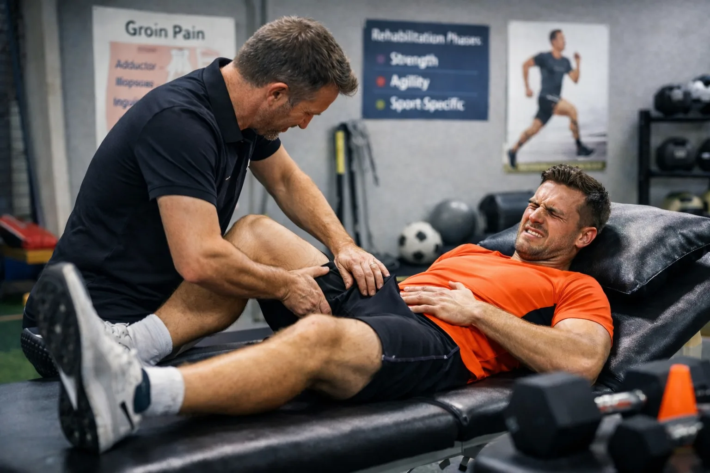

Liesklachten zijn één van de meest frustrerende blessures bij sporters. Ze sluipen erin, blijven vaag aanwezig en komen vaak terug zodra je denkt dat het weer gaat. Hardlopers, voetballers, hockeyers, vechtsporters en veldsporters herkennen het probleem maar al te goed.
Rust nemen lijkt logisch, maar helpt zelden structureel. Waarom eigenlijk? En wat is wél de juiste aanpak?
In deze blog leggen we je uit:
Wat zijn liesklachten eigenlijk?
“De lies” is geen spier of structuur op zichzelf. Het is een overgangsgebied waar meerdere systemen samenkomen:
- buikspieren
- heupspieren (adductoren, iliopsoas)
- het heupgewricht
- zenuwen
- de buikwand
Daarom is liespijn zelden één simpel probleem.
In de sportgeneeskunde wordt vaak het Doha-classificatiemodel aangehouden, waarin liesklachten worden onderverdeeld in o.a.:
- adductor-gerelateerde liesklachten
- iliopsoas-gerelateerde klachten
- Lieskanaal inguinale (buikwand) klachten
- Os pubis gerelateerde klachten
- heupgerelateerde oorzaken
- andere oorzaken
Het is belangrijk om op te merken dat een combinatie van onderverdeling mogelijk is. De adductor-gerelateerde komt het meeste voor (62-69% van de voetballers met liesklachten) en 33% van de sporters heeft een combinatie. Waarbij de meest voorkomende een combinatie van adductor en iliapsoas-gerelateerde klachten zijn.
Waarom rust bijna nooit de oplossing is
Een veelgemaakte fout bij liesklachten is: “Even rust nemen tot de pijn weg is.”
Het probleem:
- pijn verdwijnt vaak tijdelijk
- belastbaarheid neemt óók af
- bij hervatten van sport keert de klacht terug
Liesklachten zijn meestal geen acute scheuren, maar belastinggerelateerde problemen. Dat betekent dat het lichaam de belasting niet (meer) aankan — niet dat het volledig kapot is.
Wat ontbreekt, is een gerichte opbouw van belastbaarheid.
Liesklachten = load management probleem
Net als bij peesklachten geldt ook hier: Niet rust, maar slim belasten zorgt voor herstel.
Herstel vraagt om:
- voldoende kracht in de lies- en heupspieren
- controle van het bekken en de romp
- sport-specifieke belasting (draaien, sprinten, schieten)
- een goede verhouding tussen training, wedstrijd en herstel
Zonder dat blijft de lies “gevoelig”.

Hoe ziet effectieve revalidatie eruit?
Een goed revalidatieprogramma bestaat uit fases, niet uit losse oefeningen.
1. Begrijpen waar jouw klacht vandaan komt
Geen standaardprotocol, maar:
- klinisch onderzoek
- lokalisatie van de pijn
- provocatietesten
- relatie met jouw sportbelasting
Niet elke liespijn vraagt dezelfde aanpak.
2. Gerichte krachtopbouw (de basis)
Bij vrijwel alle sporters met liesklachten is er sprake van:
- verminderde adductorkracht
- verminderde heupcontrole
- asymmetrie links/rechts
Daarom starten we met:
- isometrische oefeningen (pijnregulatie)
- daarna zware, gecontroleerde krachttraining
- altijd binnen duidelijke pijnregels
Pijn mag, maar:
- maximaal licht tot matig
- geen toename na 24 uur
3. Overgang naar sport-specifieke belasting
Liesklachten ontstaan zelden in de gym — maar op het veld. Daarom bouwen we gericht op:
- sprinten
- versnellen en afremmen
- richtingsveranderingen
- schieten, trappen en duels
Dit gebeurt gefaseerd, met duidelijke criteria om door te gaan.
4. Terugkeer naar sport (en klachtenvrij blijven)
Volledig meedoen betekent niet alleen:
- pijnvrij zijn
maar ook:
- voldoende kracht
- voldoende belastbaarheid
- vertrouwen in beweging
Veel terugvallen ontstaan omdat deze fase te snel gaat.
Wat werkt meestal niet (of slechts tijdelijk)?
Wetenschap en praktijk zijn hier vrij duidelijk over:
- Alleen rust
- Massage als hoofdbehandeling
- Dry needling zonder training
- “Even losmaken”
- Snel terugkeren zonder opbouw
Deze interventies kunnen de pijn verminderen, maar verhogen de belastbaarheid niet.
Hoe lang duurt herstel?
Eerlijk antwoord:
Liesklachten vragen tijd.
Gemiddeld:
- verbetering: 6–12 weken
- volledig sportherstel: 3–6 maanden (soms langer bij langdurige klachten)
Sneller willen = grotere kans op terugval.
Onze visie bij De Kinesist
Bij De Kinesist kijken we verder dan de pijnplek alleen.
Wij combineren:
- evidence-based krachttraining
- load management
- sportspecifieke revalidatie
- individuele begeleiding
- duidelijke communicatie over verwachtingen
Ons uitgangspunt is simpel:
Niet lichter trainen, maar slimmer trainen.
Heb jij liesklachten?
Blijf er niet mee doorlopen tot het “ineens misgaat”.
Plan een intake en ontdek:
- waar jouw liesklacht vandaan komt
- wat jouw lichaam nu aankan
- hoe je veilig terugkeert naar sport
Liesklachten zijn complex — maar met de juiste aanpak goed te behandelen.
← Terug naar blog